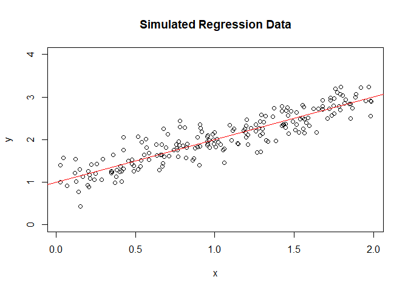
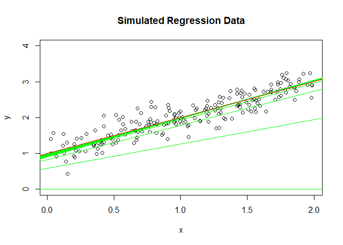
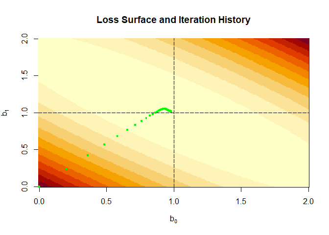
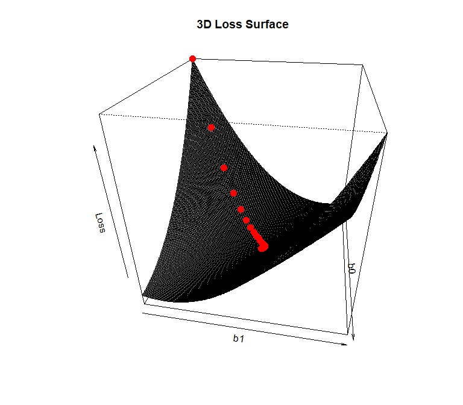

4. Gradient Descent (GD)#
Learning Material for Differential
Learning Material for Linear Algbra
Learning Material for Linear Algbra (Video)
4.1. Introduction to Gradient Descent#
Gradient Descent is an optimization algorithm used to minimize a
function by iteratively moving in the direction of steepest descent.
It is widely used in machine learning to minimize the cost function.
The basic idea is to update the parameters (weights) of a model in the
opposite direction of the gradient of the cost function with respect
to the parameters.

4.2. Stochastic Gradient Descent (SGD)#
Stochastic Gradient Descent (SGD) is a variant of gradient descent
where, instead of computing the gradient of the entire dataset, we
compute the gradient of the cost function with respect to the parameters
based on a single training example at each iteration. * This makes
SGD much faster and more scalable, especially for large
datasets.
4.2.1. General algorithm for implementing SGD#
Initialize the model parameters randomly or with some predefined values.
Shuffle the training dataset.
For each training example:
Compute the gradient of the cost function with respect to the parameters using the current training example.
Update the parameters in the direction opposite to the gradient by a small step size (
learning rate).
Repeat the process until convergence or for a fixed threshold of iterations.
4.3. Example: Linear Regression with GD#
4.3.1. Simulate linear regression data#
y = 1 + x + e, where e ~ normal(0,0.25)
set.seed(1)
b0 <- 1; b1 <- 1; n <- 200
x <- runif(n,0,2)
y <- b0 + b1*x + rnorm(n, sd=0.25)
summary(lm(y~x))
##
## Call:
## lm(formula = y ~ x)
##
## Residuals:
## Min 1Q Median 3Q Max
## -0.72323 -0.15560 -0.01819 0.16244 0.66273
##
## Coefficients:
## Estimate Std. Error t value Pr(>|t|)
## (Intercept) 1.00136 0.03831 26.14 <2e-16 ***
## x 0.99771 0.03285 30.37 <2e-16 ***
## ---
## Signif. codes: 0 '***' 0.001 '**' 0.01 '*' 0.05 '.' 0.1 ' ' 1
##
## Residual standard error: 0.2493 on 198 degrees of freedom
## Multiple R-squared: 0.8233, Adjusted R-squared: 0.8224
## F-statistic: 922.4 on 1 and 198 DF, p-value: < 2.2e-16
plot the dataset
plot(y~x, ylim=c(0,4), main="Simulated Regression Data")
abline(lm(y~x), col="red")

4.3.2. Define loss function and gradient search function#
In this example, we use MSE (squared L2 norm) as our loss function, we ignore n since it will not change the optimum solution position
\(MSE = \frac{1}{n}\sum(y-\hat y)^2=\frac{1}{n}\sum(y-(\hat \beta_0+\hat \beta_1x))^2\)
##
lossFct <- function(y,x,b0,b1){
sum((y-(b0+b1*x))^2)
} #end::lossFct
To minimize the MSE, we use gradient descent. The gradient of the MSE with respect to the parameters β̂0 and β̂1 are computed as follows:
Then, we move the current estimated parameter β0 and
β1 to the opposite direction of gradients by α (also
called learning rate) steps, here is the equation
$\(
\hat \beta_0^{new}=\hat \beta_0^{old} - \frac{\partial f}{\partial \hat \beta_0} \* \alpha
\)$
gradientUpdateFct <- function(y, x, b0Old, b1Old, alpha) {
# The objective is to move to a minimum loss
# Compute the derivative of the loss function with respect to b0
derivb0 <- -2 * sum((y - (b0Old + b1Old * x))) # at optimum equal to zero
# Compute the derivative of the loss function with respect to b1
derivb1 <- -2 * sum(x * (y - (b0Old + b1Old * x))) # at optimum equal to zero
# Update the parameters b0 and b1 using the gradients and learning rate alpha
b0New <- b0Old - derivb0 * alpha / length(x)
b1New <- b1Old - derivb1 * alpha / length(x)
# Return the updated parameters as a vector
return(c(b0New, b1New))
}
4.3.3. Start Iteration#
In this example, we set * alpha (learning rate) as 0.05 *
treshold as 0.0005 * maxIter as 200
We can start β̂0 and β̂1 randomly, but for visualization purpose, we set both as 0 at first
## Set parameters controlling the gradient descent search and history
b0 <- 0; b1 <- 0 # Set starting values
loss <- lossFct(y, x, b0, b1) # Loss at start
threshold <- 0.0005 # Change in the loss for gradient descent
alpha <- 0.05 # Learning rate: update step length
maxIter <- 200 # Maximum iterations for gradient descent
plot(y ~ x, ylim = c(0, 4), main = "Simulated Regression Data")
abline(lm(y ~ x), col = "red")
## Start iterative search
abline(a = b0, b = b1, col = "green") # Starting regression line
i <- 1
iterHist <- rbind(NULL, c(i, b0, b1, loss))
lossOld <- Inf
while (abs(lossOld - loss) > threshold) {
i <- i + 1
lossOld <- loss
b <- gradientUpdateFct(y, x, b0, b1, alpha)
b0 <- b[1]
b1 <- b[2]
loss <- lossFct(y, x, b0, b1)
iterHist <- rbind(iterHist, c(i, b0, b1, loss))
if ((i %% 5) == 0) { # Plot results of every 5th iteration
abline(a = b0, b = b1, col = "green") # Updated regression line
cat("Iteration:", i, "| Estimated Beta_0:", round(b0, 4), "| Estimated Beta_1:", round(b1, 4), "| Loss:", round(loss, 4), "\n")
if (i > maxIter) break
Sys.sleep(0.5) # Slow down for visualization
} # end::if
} # end::while
## Iteration: 5 | Estimated Beta_0: 0.581 | Estimated Beta_1: 0.6809 | Loss: 130.0938
## Iteration: 10 | Estimated Beta_0: 0.8234 | Estimated Beta_1: 0.9576 | Loss: 22.0329
## Iteration: 15 | Estimated Beta_0: 0.8957 | Estimated Beta_1: 1.0328 | Loss: 13.34
## Iteration: 20 | Estimated Beta_0: 0.9197 | Estimated Beta_1: 1.0512 | Loss: 12.6129
## Iteration: 25 | Estimated Beta_0: 0.9297 | Estimated Beta_1: 1.0537 | Loss: 12.5278
## Iteration: 30 | Estimated Beta_0: 0.9356 | Estimated Beta_1: 1.0518 | Loss: 12.4974
## Iteration: 35 | Estimated Beta_0: 0.9402 | Estimated Beta_1: 1.0488 | Loss: 12.4743
## Iteration: 40 | Estimated Beta_0: 0.9441 | Estimated Beta_1: 1.0458 | Loss: 12.4542
## Iteration: 45 | Estimated Beta_0: 0.9477 | Estimated Beta_1: 1.0428 | Loss: 12.4366
## Iteration: 50 | Estimated Beta_0: 0.9511 | Estimated Beta_1: 1.0399 | Loss: 12.4212
## Iteration: 55 | Estimated Beta_0: 0.9543 | Estimated Beta_1: 1.0373 | Loss: 12.4076
## Iteration: 60 | Estimated Beta_0: 0.9573 | Estimated Beta_1: 1.0348 | Loss: 12.3957
## Iteration: 65 | Estimated Beta_0: 0.96 | Estimated Beta_1: 1.0325 | Loss: 12.3853
## Iteration: 70 | Estimated Beta_0: 0.9626 | Estimated Beta_1: 1.0303 | Loss: 12.3761
## Iteration: 75 | Estimated Beta_0: 0.9651 | Estimated Beta_1: 1.0282 | Loss: 12.368
## Iteration: 80 | Estimated Beta_0: 0.9674 | Estimated Beta_1: 1.0263 | Loss: 12.361
## Iteration: 85 | Estimated Beta_0: 0.9695 | Estimated Beta_1: 1.0245 | Loss: 12.3547
## Iteration: 90 | Estimated Beta_0: 0.9715 | Estimated Beta_1: 1.0228 | Loss: 12.3493
## Iteration: 95 | Estimated Beta_0: 0.9734 | Estimated Beta_1: 1.0212 | Loss: 12.3445
## Iteration: 100 | Estimated Beta_0: 0.9751 | Estimated Beta_1: 1.0198 | Loss: 12.3403
## Iteration: 105 | Estimated Beta_0: 0.9768 | Estimated Beta_1: 1.0184 | Loss: 12.3366
## Iteration: 110 | Estimated Beta_0: 0.9783 | Estimated Beta_1: 1.0171 | Loss: 12.3333
## Iteration: 115 | Estimated Beta_0: 0.9798 | Estimated Beta_1: 1.0159 | Loss: 12.3305
abline(lm(y ~ x), col = "red") # Plot final regression line again

cat("\nFinal solution gradient descent\nBeta_0:", round(iterHist[nrow(iterHist), 2], 4), "| Beta_1:", round(iterHist[nrow(iterHist), 3], 4), "\n")
##
## Final solution gradient descent
## Beta_0: 0.9809 | Beta_1: 1.0149
It convergence before 200 round iterations.
4.3.4. Visualize the loss surface#
b0Grid <- seq(0,2, by=0.01)
b1Grid <- seq(0,2, by=0.01)
##
## Setup loss surface
##
lossValMat <- matrix(NA, nrow = length(b0Grid), ncol = length(b1Grid))
for (i in 1:length(b0Grid)) {
for (j in 1:length(b1Grid)) {
lossValMat[i, j] <- lossFct(y, x, b0Grid[i], b1Grid[j])
}
}
##
## Plot loss surface and iteration history
##
image(b0Grid, b1Grid, lossValMat, ,xlab=expression(b[0]),ylab=expression(b[1]),
main="Loss Surface and Iteration History")
abline(v=coef(lm(y~x))[1], h=coef(lm(y~x))[2], lty="longdash")
points(iterHist[1:nrow(iterHist),2:3], pch=".", cex=4, col="green")

b0Grid <- seq(0, 2, by = 0.01)
b1Grid <- seq(0, 2, by = 0.01)
lossValMat <- matrix(NA, nrow = length(b0Grid), ncol = length(b1Grid))
for (i in 1:length(b0Grid)) {
for (j in 1:length(b1Grid)) {
lossValMat[i, j] <- lossFct(y, x, b0Grid[i], b1Grid[j])
}
}
# Create the 3D plot
persp3D <- persp(b0Grid, b1Grid, lossValMat, theta = 100, phi = 30,
xlab = "b0", ylab = "b1", zlab = "Loss",
main = "3D Loss Surface", shade = 0.75, # Adjust shading for better visibility
box = TRUE) # Add a box around the plot
trans3d <- trans3d(x = iterHist[, 2], y = iterHist[, 3], z = iterHist[, 4],
pmat = persp3D)
points(trans3d, pch = 19, col = "red", cex = 1.5)

4.4. Example with SGD#
The process is very similar to GD, but we do not compute the gradients from whole dataset, but from samples
set.seed(123)
epochs <- 20 # number of steps
b0Old <- 0; b1Old <- 0 # Start values for coefficients
for (i in 1:epochs){
jSeq <- sample(1:n,size = 20) # Random sequence of observations
for (j in jSeq){
b <- gradientUpdateFct(y[j],x[j],b0Old,b1Old,alpha)
b0Old <- b[1]
b1Old <- b[2]
} # end::oneLine
} # end::epoch
cat("\nFinal solution single observation:
b0: ", b0Old, "b1: ", b1Old,"\n")
##
## Final solution single observation:
## b0: 1.040424 b1: 0.9717855